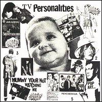

Television Personalities |
 1982 - Whaam! - BIG 1 - LP Songs: Adventure Playground A Day In Heaven Scream Quietly Mummy Your Not Watching Me Brian's Magic Car Where The Rainbow Ends David Hockney's Diaries Painting By Numbers Lichtenstein Painting Magnificient Dreams If I Could Write Poetry |
1986 - Dreamworld -BIG DREAM 4 - LP Songs: (same as original) Los Angeles '82. Produced by Krishna. |
1991 - Fire - REFIRE 8 - LP/CD/MC Songs: (same as original) All songs written by Dan Treacy and published by Twist And Shout Music. Remastered by Phil Vinall and Barry Woodward at Townhouse. Sleve recreation by Hand And Eye. Television Personalities Mummy Your Not Watching Me was recorded in 1981 at Starforce Studios, Battersea, London SW11. The artistes were Daniel Treacy, Mark Sheppard, Edward Ball and Bernie The Bass. Thanks to Martin Daley. |